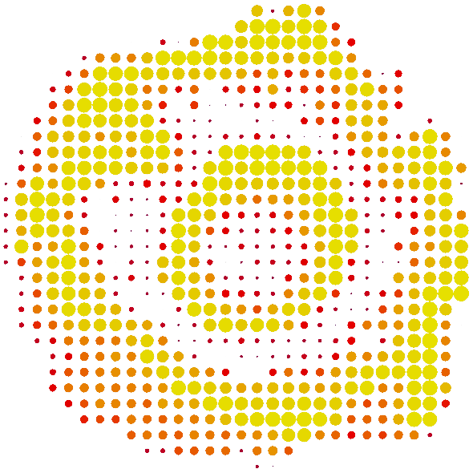
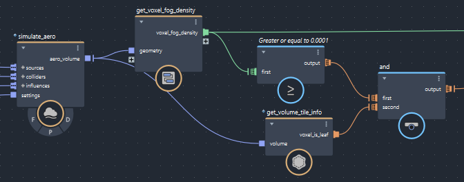

体积是 Bifrost 中的一种几何体。体积是 Aero 和燃烧模拟的自然输出，您可以仅使用高级复合创建和渲染引人注目的效果。但是，对于某些特殊用途，您可能需要更深入地了解体积的内部工作原理和结构。
与大多数其他程序一样，Bifrost 的体积由体素组成。体素是填充三维空间的小立方体，类似于像素是填充二维图像的小方块。体积特性的值可能因体素而异。常见的 float 特性包括 voxel_fog_density、voxel_temperature 和 voxel_signed_distance，而常见的 float3 特性包括 voxel_velocity 和 voxel_acceleration。
体积与 Bifrost 场类似，它们都表示整个空间中的值。但是，场基于可以在任意位置计算的公式，而体积存储在离散体素位置采样的值 - 精确体素位置之间的值必须从周围体素插入。
体积的特性通常表示在空间中平滑而连续变化的值，即使仅存储离散体素的值。对于 float 特性，可以想象绘制具有常量值的曲面（称为等值面），类似于地形图上的等高线或天气图上的等压线。对于温度，此等值面可能是围绕热源的不规则形状的封套，它已经将周围的空气加热了特定的量。

由于等值面是一个曲面，因此可以使用 volume_to_mesh 节点并指定所需的 level_set_threshold（有时称为等值），从具有标量特性的体积创建网格。由此生成的曲面可能很复杂，例如，多个热源周围的特定温度。在这种情况下，高阈值可能会在每个源附近产生不相交的曲面，而低阈值可能会在所有曲面周围产生单个连续的形状。
空间中任意点到闭合曲面上最近位置之间的距离形成一种特殊类型的等值面，称为带符号距离函数或带符号距离场 (SDF)。在计算机图形中，曲面外的距离为正值，而曲面内的距离为负值。
在启用 store_level_set 的情况下将几何体转化为体积时，生成的 voxel_signed_distance 特性包含在体素位置采样的带符号距离函数的值。0 等值面表示原始网格曲面。您可以使用它重建较为精确的网格，具体精确度取决于体素的分辨率。除 voxel_signed_distance 外，体积可能还包含从输入网格采样的其他特性，如颜色。
请务必记住，虽然任何等值面都可以用来构建网格曲面，但并非每个等值面都表示带符号距离函数。在带符号距离场中，从较高值到较低值的梯度变化始终意味着您越来越接近曲面（0 等值面），但当这些值表示诸如温度之类的特性时，则并非如此 - 您可能只是接近温度稍冷区域的中心，而周围都是较暖的值。某些算法需要带符号距离函数，使用任意等值面并不能提供合理的结果。
Bifrost 体积使用稀疏体素。它不会均匀地分割可能存在的巨大边界体积，而是仅在需要的位置创建体素。例如，体素可能只在 Aero 源周围以包含发射的雾，或只在转化网格的曲面附近。稀疏体素也用于其他体积格式，如 VDB。与在 VDB 中一样，附近的体素也被组织成块，称为平铺。
Bifrost 的体素也可以具有不同的大小，这与 VDB 等大多数其他体积格式不同。这节省了内存，因为雾密度较低的平静区域不需要像密度较高的湍流区域那样多的细节。
体素排列在多分辨率平铺树中，其中较大、较粗糙的体素可用作下一个更精细级别体素的平铺。不包含任何子体素的体素称为叶体素。非叶体素中的数据是其子体素中值的平均值。
在对体积的体素进行迭代时，有时需要使用 get_volume_tile_info 来检查每个体素是否是叶体素，然后再对其执行操作。
